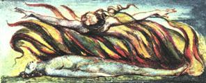

Peygamber İşaya ve Peygamber Hezekiel benimle yemek yedi ve nasıl böylesine emin bir şekilde ve hiç çekinmeden, Tanrının kendileriyle konuştuğunu öne sürmeye cesaret ettiklerini sordum onlara; ve aynı zamanda yanlış anlaşılıp, bir dayatma nedeni olacaklarını düşünüp düşünmediklerini de.
İşaya yanıtladı: ‘Sınırlı ve organik bir algıyla ne gördüm ne işittim Tanrıyı; lâkin duyularım her şeyin içindeki sonsuzu keşfetti, işte o zaman, haksızlığa öfkelenen dürüst sesin Tanrının sesi olduğundan hiç kuşku duymadığım için, sonuçlarına aldırmadan yazdım.’
Ardından sordum: ‘Bir şeyin öyle olduğuna duyulan sarsılmaz inanç, o şeyi öyle yapar mı?’
Yanıtladı: ‘Tüm şairler bunun böyle olduğuna inanır, ki imgelem çağında bu güçlü inanış dağları yerinden oynatmıştı; fakat pek çok insan, herhangi bir şeye güçlü bir inanç besleyebilme yeteneğinden mahrumdur.’
Sonra Hezekiel şöyle dedi: ‘Doğu felsefesi insan algısının temel ilkelerini öğretti: Başlangıçta, bazı uluslar bir ilkeye bazılarıysa bir diğerine inandılar; biz İsrailliler (şimdi adlandırdığınız gibi) Şiirsel Dehanın temel ilke, diğerlerininse sadece birer türev olduğunu öğrettik ki, başka ülkelerin Din adamlarını ve Filozoflarını hor görmemizin ve tüm Tanrıların bizim Tanrımızdan kaynaklandığının ve Şiirsel Dehaya bağımlı olduklarının er ya da geç kanıtlanacağına dair kehanetimizin nedeni buydu. Büyük şairimiz Kral Davut’un aşkın tutkusu ve Tanrıya yakarışındaki dokunaklılık bundandır; bunları söyleyerek düşmanlarını yener ve kralları yönetir. Ve biz Tanrımızı öylesine sevdik ki, diğer ulusların tüm tanrılarına onun adıyla lanet ettik ve ayaklanmış olduklarını öne sürdük. Bu düşünceler yüzünden avam, er ya da geç tüm ulusların Yahudilerin uyruğu haline geleceğini düşünür oldu.’
‘Bu,’ dedi, ‘tüm güçlü inançlar gibi aşkınlaşır, zira bütün uluslar Yahudi yasalarına inanır ve Yahudilerin tanrısına taparlar; daha büyük bir boyun eğiş olabilir mi?’
Bu sözleri hayretle dinledim ve şimdi kendi kanaatimi itiraf etmeliyim. Yemekten sonra İşaya’ya, kayıp yapıtlarını dünyaya lütfedip edemeyeceğini sordum. Eşit değerdeki hiçbir şey kaybolmaz dedi. Hezekiel de aynı şeyi söyledi.
Bu kez İşaya’ya, onu üç yıl boyunca çıplak ve yalınayak dolaştıran şeyi sordum. ‘Dostumuz Yunanlı Diogenes’i dolaştıranla aynı şey,’ diye yanıtladı.
Sonra Hezekiel’e, neden hayvan dışkısı yediğini ve neden çok uzun süre sağ ve sol yanı üstüne yattığını sordum. ‘Diğer insanları sonsuzluk algısına yükseltme arzusu,’ diye yanıt verdi, ‘ki Kuzey Amerika kabilelerinin uyguladığı bir pratiktir bu ve sadece şu ânın rahatlığı ve zevki uğruna dehasına ve vicdanına direnen kişi, dürüst olabilir mi?’

Cehennemde duyduğuma göre, dünyanın altı bin yılın sonunda, alevler içinde yanıp kül olacağını söyleyen antik gelenek doğrudur.
Bu vesileyle, yalazlı kılıcıyla kerubi’ye hayat ağacındaki muhafızlığını bırakması emredilir, ki bunu yaptığında bütün yaradılış yok olacak ve şu an için sonlu ve çürümüş olarak görünenler, sonsuz ve kutsal olarak ortaya çıkacaktır.
Bu, daha fazla tensel zevkle gerçekleşecektir.
Lâkin, insanın ruhundan ayrı bir bedeni olduğu temel inancı silinmelidir; ki bunu korkunç bir yöntemle, Cehennem için sağlıklı ve şifalı olan, görünürdeki yüzeyleri eriten ve gizlenmiş olan sonsuzu gözler önüne seren aşındırıcılarla, levhalar üzerine basarak yapacağım.
Algının kapıları temizlenirse, her şey insana olduğu gibi, sonsuz biçimiyle görünecektir.
Çünkü insanoğlu kendisini, her şeyi daracık çatlaklarından gördüğü mağarasına kapatmıştır.